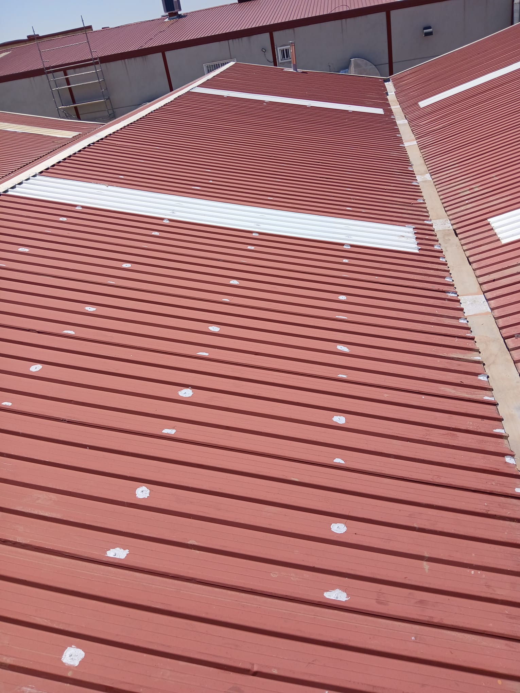
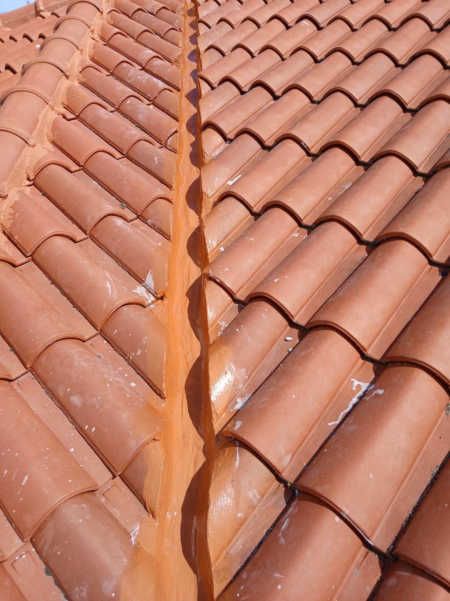
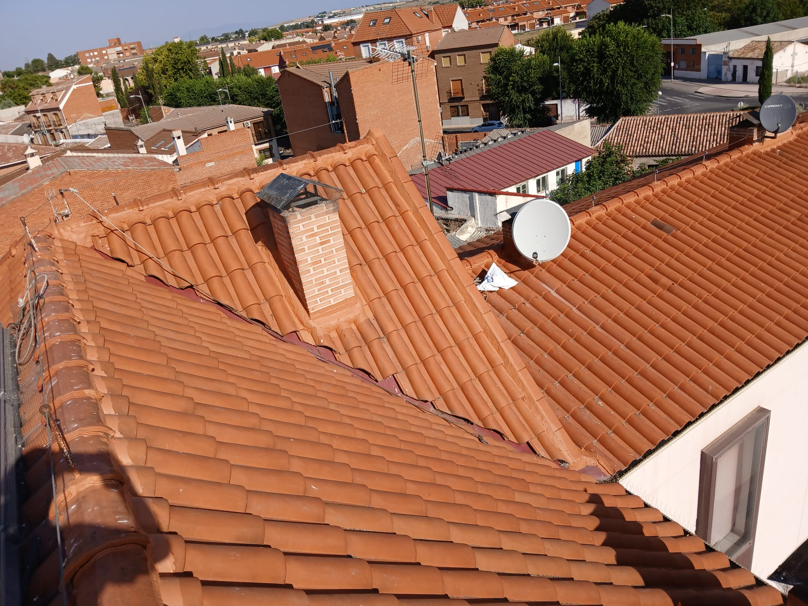
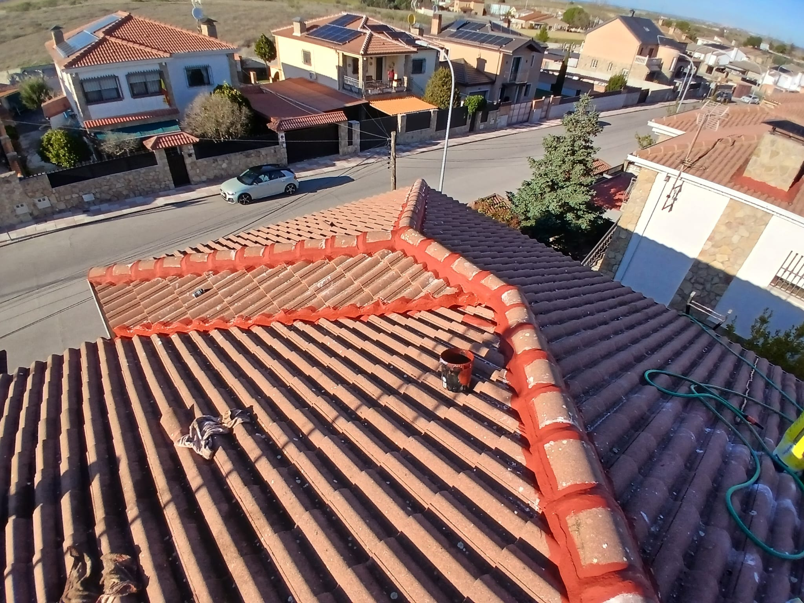
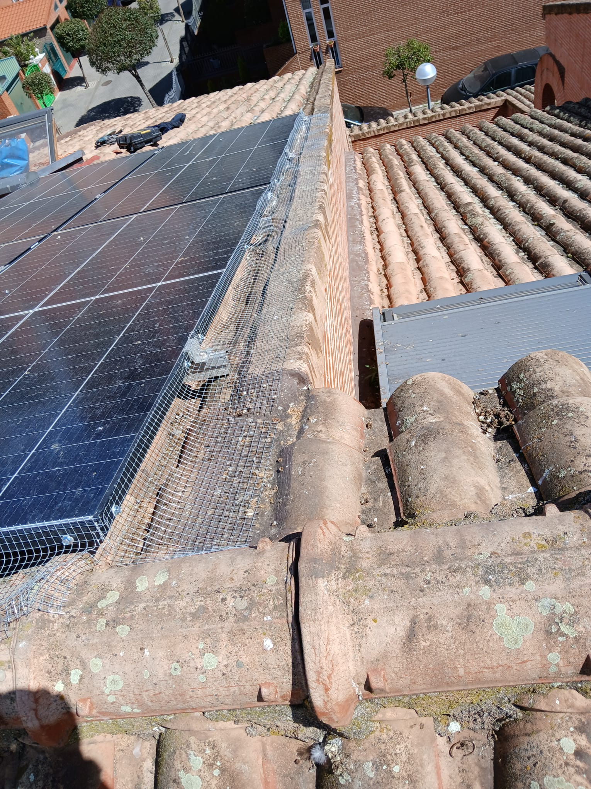

Soluciones profesionales para cada tipo de tejado y cubierta

Realizamos diagnóstico completo y reparamos todo tipo de averías: goteras, tejas rotas o desplazadas, canalones dañados, filtraciones por chimeneas y claraboyas. Actuamos con rapidez para evitar daños mayores.

Aplicamos sistemas de impermeabilización profesional con membranas, láminas y tratamientos líquidos de alta durabilidad. Protegemos tu cubierta de forma duradera contra la lluvia, la humedad y las filtraciones.

Construimos tejados desde cero para obra nueva o como sustitución completa de cubiertas deterioradas. Utilizamos materiales de alta calidad y técnicas modernas que garantizan una larga vida útil.

Rehabilitamos cubiertas de edificios, comunidades y viviendas unifamiliares. Restauramos la estructura, sustituimos materiales deteriorados y mejoramos el aislamiento y la estanqueidad.

Instalamos mallas, pinchos y sistemas disuasorios para proteger tejados, balcones y fachadas contra palomas y otras aves. Soluciones discretas y duraderas.
Podamos y retiramos árboles de gran altura cercanos a tejados, fachadas y tendidos eléctricos. Evitamos daños en cubiertas por ramas que rozan, rompen tejas o acumulan humedad. Trabajamos con equipos de altura, arnés y seguridad certificada.
Cuéntanos tu problema y te damos la mejor solución con presupuesto sin compromiso.